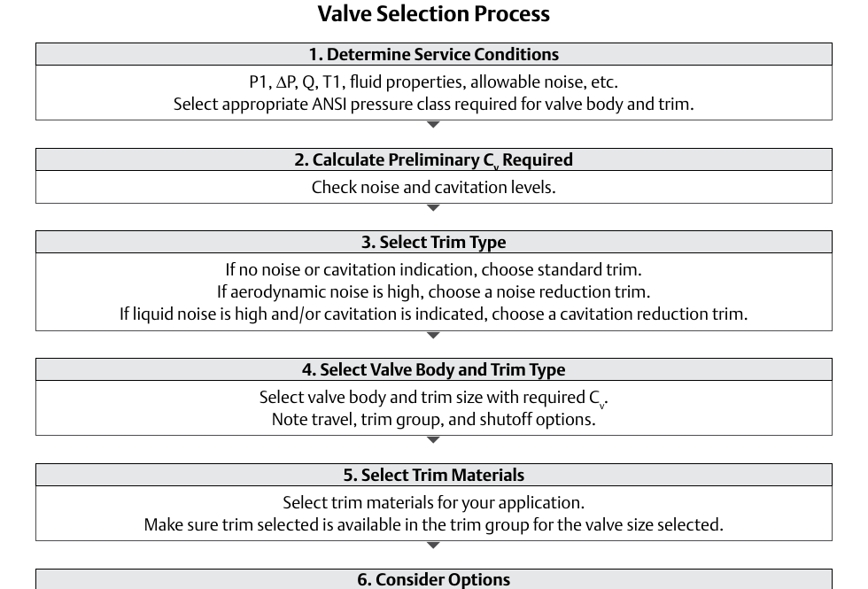

The Valve-Selection Decision, End to End

- 1Service conditions fix everything downstream
- 2Preliminary Cv is checked against noise/cavitation before it counts as final
- 3Trim type, body/trim size, and materials each follow from the step before
Control Valve Handbook, 6th ed., unnumbered flowchart, p.100 — used directly. Component Index: cvh-cmp-valve-selection-process-flowchart.